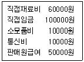

한식조리기능사 (2012-04-08 기출문제)
1과목: 식품위생 및 법규
1. 경구감염병과 세균성 식중독의 주요 차이점에 대한 설명으로 옳은 것은?
- 경구감염병은 다량의 균으로, 세균성 식중독은 소량의 균으로 발병한다.
- 세균성 식중독은 2차 감염이 많고, 경구감염병은 거의 없다.
- 경구감염병은 면역성이 없고, 세균성 식중독은 있는 경우가 많다.
- 세균성 식중독은 잠복기가 짧고, 경구감염병은 일반적으로 길다.
(정답률: 64%)

2. 합성수지제 기구, 용기·표장제 등에서 검출될 수 있는 화학적 식중독 원인물질은?
- 아플라톡신(aflatoxin)
- 솔라닌(solanine)
- 포름알데히드(formaldehyde)
- 니트로사민(N - nitrosamine)
(정답률: 70%)
3. 식품의 조리·가공시 거품이 발생하여 작업에 지장을 주는 경우 사용하는 식품첨가물은?
- 규소 수지(silicone resin)
- n-헥산(n - hexane)
- 유동파라핀(liquid paraffin)
- 몰포린지방산염
(정답률: 72%)
4. 웰치균(Clostridium perfringens)에 대한 설명으로 옳은 것은?
- 아포는 60℃에서 10분 가열하면 사멸한다.
- 혐기성 균주이다.
- 냉장온도에서 잘 발육한다.
- 당질식품에서 주로 발생한다.
(정답률: 65%)
5. 통조림용 공관을 통해 주로 중독될 수 있는 유해 금속은?
- 수은
- 주석
- 비소
- 바륨
(정답률: 91%)
6. 식품의 변질 및 부패를 일으키는 주원인은?
- 미생물
- 기생충
- 농약
- 자연독
(정답률: 91%)
7. 밀가루의 표백과 숙성을 위하여 사용하는 식품첨가물은?
- 유화제
- 개량제
- 팽창제
- 점착제
(정답률: 49%)
8. 식품의 조리 가공, 저장 중에 생성되는 유해 물질 중 아민이나 아미드류와 반응하여 니트로소 화합물을 생성하는 성분은?
- 지질
- 아황산
- 아질산염
- 삼염화질소
(정답률: 72%)
9. 다음 중 살모넬라에 오염되기 쉬운 대표적인 식품은?
- 과실류
- 해초류
- 난류
- 통조림
(정답률: 65%)
10. 식물과 그 유독성분이 잘못 연결된 것은?
- 감자 - 솔라닌(solanine)
- 청매 - 프시로신(psilocin)
- 피마자 - 리신(ricin)
- 독미나리 - 시큐톡신(cicutoxin)
(정답률: 83%)
11. 영업허가를 받아야 할 업종이 아닌 것은?
- 단란주점영업
- 유흥주점영업
- 식품조사처리업
- 일반음식점영업
(정답률: 69%)
12. 조리사를 두지 않아도 가능한 영업은?
- 복어를 조리·판매하는 영업
- 국가가 운영하는 집단급식소
- 사회복지시설의 집단급식소
- 식사류를 조리하지 않는 식품접객업소
(정답률: 92%)
13. 식품위생법상 집단급식소는 상시 1회 몇 인에게 식사를 제공하는 급식소인가?
- 20명 이상
- 40명 이상
- 50명 이상
- 100명 이상
(정답률: 87%)
14. 허위표시, 과대광고, 비방광고 및 과대포장의 범위에 해당되지 않는 것은?
- 건강증진·체력유지·체질개선·식이요법 등에 도움을 준다는 표현
- 질병의 예방 또는 치료에 효능이 있다는 내용의 표시·광고
- 제품의 원재료 또는 성분과 다른 내용의 표시·광고
- 각종 상장 등을 이용하거나 “인증”, ·“보증”, ·“추천” 또는 이와 유사한 내용을 표현
(정답률: 60%)
15. 다음 중 소분·판매할 수 있는 식품은?
- 벌꿀제품
- 어육제품
- 과당
- 레토르트식품
(정답률: 65%)
2과목: 식품학
16. 다음 중 다당류에 속하는 탄수화물은?
- 전분
- 포도당
- 과당
- 갈락토오스
(정답률: 61%)
17. 비타민 A의 함량이 가장 많은 식품은?
- 쌀
- 당근
- 감자
- 오이
(정답률: 81%)
18. 식품의 갈변현상을 억제하기 위한 방법과 거리가 먼 것은?
- 효소의 활성화
- 염류 또는 당 첨가
- 아황산 첨가
- 열처리
(정답률: 52%)
19. 지방산의 불포화도에 의해 값이 달라지는 것으로 짝지어진 것은?
- 융점, 산가
- 검화가, 요오드가
- 산가, 유화가
- 융점, 요오드가
(정답률: 54%)
20. 다음 식품 중 이소티오시아네이트(isothiocyanates)화합물에 의해 매운맛 내는 것은?
- 양파
- 겨자
- 마늘
- 후추
(정답률: 65%)
21. 다음 채소류 중 일반적으로 꽃 부분을 식용으로 하는 것과 거리가 먼 것은?
- 브로커리(broccoli)
- 컬러플라워(cauliflower)
- 비트(beets)
- 아티쵸크(artiohoke)
(정답률: 76%)
22. 우유 100mL에 칼슘이 170mg 정도 들어있다면 우유 350mL에는 칼슘이 약 몇mg 정도 들어있는가?
- 360 mg
- 540 mg
- 595 mg
- 650 mg
(정답률: 71%)
23. 식품의 색소에 관한 설명 중 옳은 것은?
- 클로로필은 마그네슘을 중성원자로 하고 산에 의해 클로로필린이라는 갈색물질로 된다.
- 카로티노이드 색소는 카로틴과 크산토필 등이 있다.
- 플라보노이드 색소는 산성-중성-알칼리성으로 변함에 따라 적색-자색-청색으로 된다.
- 동물성 색소 중 근육색소는 헤모글로빈이고, 혈색소는 미오글로빈이다.
(정답률: 33%)
24. 숙성에 의해 품질향상 효과가 가장 큰 것은?
- 생선
- 조개
- 쇠고기
- 오징어
(정답률: 84%)
25. 다음 중 비타민 D의 전구물질로 프로비타민 D로 불리는 것은?
- 프로게스테론(progesterone)
- 에르고스테롤(ergosterol)
- 시토스테롤(sitosterol)
- 스티그마스테롤(stigmasterol)
(정답률: 65%)
26. 전분의 호화에 대한 설명으로 맞는 것은?
- α-전분이 β-전분으로 되는 현상이다.
- 전분의 미쉘(micelle)구조가 파괴된다.
- 온도가 낮으면 호화시간이 빠르다.
- 전분이 덱스트린(dextrin)으로 분해되는 과정이다.
(정답률: 39%)
27. 단백질의 분해효소로 식물성 식품에서 얻어지는 것은?
- 펩신(pepsin)
- 트립신(trypsin)
- 파파인(papain)
- 레닌(rennin)
(정답률: 52%)
28. 건조 한천을 물에 담그면 물을 흡수하여 부피가 커지는 현상은?
- 이장
- 응석
- 투석
- 팽윤
(정답률: 80%)
29. 우유의 균질화(homogenization)에 대한 설명으로 옳은 것은?
- 우유의 성분을 일정하게 하는 과정을 말한다.
- 우유의 색을 일정하게 하기 위한 과정이다.
- 우유의 단백질 입자의 크기를 미세하게 하기 위한 과정이다.
- 우유의 지방의 입자의 크기를 미세하게 하기 위한 과정이다.
(정답률: 48%)
30. 다음 중 산미도가 가장 높은 것은?
- 주석산
- 사과산
- 구연산
- 아스코르브산
(정답률: 42%)
3과목: 조리이론과 원가계산
31. 찹쌀밥의 노화지연과 가장 관계가 깊은 것은?
- 아밀라아제
- 아밀로펙틴
- 글리코겐
- 글루코오스
(정답률: 75%)
32. 다음 중 신선란의 특징은?
- 난황이 넓적하게 퍼진다.
- 기실부가 거의 생성되지 않았다.
- 수양난백이 농후난백보다 많다.
- 삶았을 때 난황표면이 쉽게 암록색으로 변한다.
(정답률: 58%)
33. 다음 자료에 의하여 제조원가를 산출하면?

- 175000원
- 180000원
- 220000원
- 230000원
(정답률: 49%)
34. 다음 중 비결정형 캔디가 아닌 것은?
- 캐러멜(caramel)
- 퐁당(fondant)
- 마시멜로우(mal shmallow)
- 태피(taffy)
(정답률: 62%)
35. 식혜를 만들 때 당화온도를 50~60℃ 정도로 하는 이유는?
- 엿기름을 호화시키기 위하여
- 프티알린의 작용을 활발하게 하기 위하여
- 아밀라아제의 작용을 활발하게 하기 위하여
- 밥알을 노화시키기 위하여
(정답률: 46%)
36. 달걀의 기포형성을 도와주는 물질은?
- 산, 수양난백
- 우유, 소금
- 우유, 설탕
- 지방, 소금
(정답률: 56%)
37. 햇볕에 노출하여 자외선을 쪼이게 되면 피부에서 합성되는 비타민은?
- 비타민 A
- 비타민 B
- 비타민 C
- 비타민 D
(정답률: 84%)
38. 채소류를 취급하는 방법으로 맞는 것은?
- 쑥은 소금에 절여 물기를 꼭 짜낸 후 냉장 보관한다.
- 샐러드용 채소는 냉수에 담그었다가 사용한다.
- 도라지의 쓴맛을 빼내기 위해 1% 설탕물로만 담근다.
- 배추나 셀러리, 파 등은 옆으로 뉘어서 보관한다.
(정답률: 76%)
39. 당질의 기능에 대한 설명 중 틀린 것은?
- 당질은 평균 1g당 4kcal를 공급한다.
- 혈당을 유지한다.
- 단백질 절약작용을 한다.
- 당질을 섭취가 부족해도 체내 대사의 조절에는 큰 영향이 없다.
(정답률: 72%)
40. 식품과 유지의 특성이 잘못 짝지어진 것은?
- 버터크림 - 크리밍성
- 쿠키 - 점성
- 마요네즈 - 유화성
- 튀김 - 열매체
(정답률: 67%)
41. 단체급식의 특징으로 옳은 것은?
- 불특정 다수인을 대상으로 급식한다.
- 영리를 목적으로 하는 상업시설을 포함한다.
- 특정 다수인에게 계속적으로 식사를 제공하는 것이다.
- 대중음식점의 급식시설을 뜻한다.
(정답률: 80%)
42. 아이스크림을 만드는 데 필요한 주요 원료와 가장 거리가 먼 것은?
- 유화제
- 지방
- 안정제
- 한천
(정답률: 74%)
43. 식빵을 만드는데 가장 적합한 밀가루는?
- 강력분
- 중력분
- 혼합밀가루
- 박력분
(정답률: 71%)
44. 육류조리방법에 대한 설명으로 옳은 것은?
- 돼지고기찜에 토마토를 넣으려면 처음부터 함께 넣는다.
- 편육은 끓는 물에 넣어 삶는다.
- 탕을 끓일 때는 끓는 물에 소금을 약간 넣은 후 고기를 넣는다.
- 장조림을 할 때는 먼저 간장을 넣고 끓여야 한다.
(정답률: 77%)
45. 식육이 공기와 접촉하여 선홍색이 될 때 선홍색의 주체 성분은?
- 옥시미오글로빈(oxymyoglobin)
- 미오글로빈(myoglobin)
- 메트미오글로빈(metmyoglobin)
- 헤모글로빈(hemoglobin)
(정답률: 49%)
46. 쇠고기가 값이 비싼 돼지고기로 대체하려고 할 때 쇠고기 300g을 돼지고기 몇g으로 대체하면 되는가? (단, 식품분석표상 단백질함량은 쇠고기 20g, 돼지고기 15g이다.)
- 200g
- 360g
- 400g
- 460g
(정답률: 52%)
47. 토마토 크림스프를 만들 때 나타나는 응고 현상은?
- 산에 의한 우유의 응고
- 레닌에 의한 우유의 응고
- 염류에 의한 밀가루의 응고
- 가열에 의한 밀가루의 응고
(정답률: 55%)
48. 김의 보관 중 변질을 일으키는 인자와 거리가 먼 것은?
- 산소
- 광선
- 저온
- 수분
(정답률: 61%)
49. 식품의 풍미를 증진시키는 방법으로 적합하지 않은 것은?
- 부드러운 채소 조리시 그 맛을 제대로 유지하려면 조리시간을 단축해야 한다.
- 빵을 갈색이 나게 잘 구우려면 건열로 갈색반응이 일어날 때까지 충분히 구워야 한다.
- 사태나 양지머리와 같은 질긴 고기의 국물을 맛있게 맛을 내기 위해서는 약한 불에 서서히 끓인다.
- 빵은 증기로 찌거나 전자오븐을 시간을 단축시켜 조리한다.
(정답률: 65%)
50. 다음 중 저온저장의 효과가 아닌 것은?
- 미생물의 생육을 억제할 수 있다.
- 효소활성이 낮아져 수확 후 호흡, 발아 등의 대사를 억제할 수 있다.
- 살균효과가 있다.
- 영양가 손실 속도를 저하시킨다.
(정답률: 72%)
4과목: 공중보건
51. 쇠고기를 가열하지 않고 회로 먹을 때 생길 수 있는 가능성이 가장 큰 기생충은?
- 민촌충
- 선모충
- 유구조충
- 회충
(정답률: 59%)
52. 비말감염이 가장 잘 이루어질 수 있는 조건은?
- 군집
- 영양결핍
- 피로
- 매개곤충의 서식
(정답률: 75%)
53. 소음의 측정단위인 데시벨(dB)은?
- 음의 강도
- 음의 질
- 음의 파장
- 음의 전파
(정답률: 72%)
54. 리케차(rickettsia)에 의해서 발생되는 감염병은?
- 세균성이질
- 파라티푸스
- 발진티푸스
- 디프테리아
(정답률: 53%)
55. 피부온도의 상승이나 국소혈관의 확장작용을 나타내는 것은?
- 적외선
- 가시광선
- 자외선
- 감마선
(정답률: 46%)
56. 만성중독시 비점막 염증, 피부궤양, 비중격천공 등의 증상을 나타내는 것은?
- 수은
- 벤젠
- 카드뮴
- 크롬
(정답률: 44%)
57. 환자나 보균자의 분뇨에 의해서 감염될 수 있는 경구감염병은?
- 장티푸스
- 결핵
- 인플루엔자
- 디프테리아
(정답률: 71%)
58. 다음 중 대기오염을 일으키는 요인으로 가장 영향력이 큰 것은?
- 고기압일 때
- 저기압일 때
- 바람이 불 때
- 기온역전일 때
(정답률: 73%)
59. 하수처리 방법으로 혐기성처리 방법은?
- 살수여과법
- 활성오니법
- 산화지법
- 임호프탱크법
(정답률: 42%)
60. 평균수명에서 질병이나 부상으로 인하여 활동하지 못하는 기간을 뺀 수명은?
- 기대수명
- 건강수명
- 비례수명
- 자연수명
(정답률: 75%)